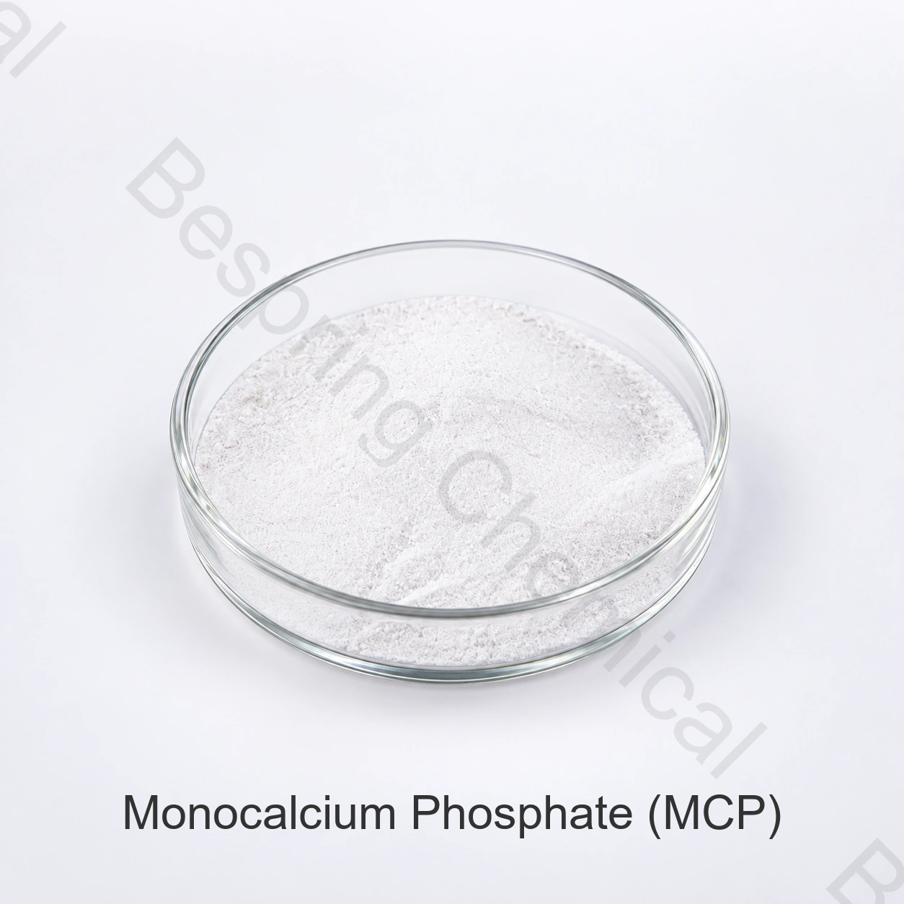

Product identity and grade
State the exact form, target species, feed type, quantity, packing, destination and required documents.
Feed grade ingredient · Feed calcium and phosphorus source · MCP
Feed-grade monocalcium phosphate is a calcium and phosphorus source for animal diets; buyers must qualify hydration form, phosphorus and calcium basis, digestibility context and contaminants.

Product image · confirm grade and packaging when ordering
Share exact form, target species, feed category, quantity, destination and documents.
GradeFeed grade, subject to source qualification
SpecificationCurrent document available from sales
Use conditionsSpecies and destination rules govern
Batch evidenceCurrent COA available for supplied lots
Direct product answer
Feed-grade monocalcium phosphate is a calcium and phosphorus source for animal diets; buyers must qualify hydration form, phosphorus and calcium basis, digestibility context and contaminants.
Suitability depends on the exact product, target species, life stage, complete diet, intended technological or nutritional function and destination-market authorization. This page is procurement guidance, not an inclusion-rate recommendation.
Procurement checklist
Compare the offered grade, application requirements and commercial terms before requesting a sample or placing an order.
State the exact form, target species, feed type, quantity, packing, destination and required documents.
Request a source-specific quotation with current specification, Incoterm, destination and delivery window.
Share the formulation basis, intended function, process, inclusion system and applicable feed rules.
Qualify identity, methods, COA, SDS, traceability, certificates and change-control expectations.
Application screening
These are screening areas, not universal authorizations, feeding instructions, dosage recommendations or guaranteed outcomes.
Use the nutritionist's approved phosphorus matrix for the bird type and production stage. Review basal ingredients, calcium sources and the phytase program together.
Compare delivered cost on the approved phosphorus contribution, including the effect on other mineral ingredients. Retain the same digestibility basis across supplier comparisons.
Include processing, pellet stability and water exposure in source qualification. A feed-mill assay alone does not establish nutrient delivery under the intended feeding conditions.
Check flow, particle matching, blend uniformity and compatibility with the other premix components. Set acceptance criteria for the finished blend as well as the incoming MCP.
Technical selection
Request total phosphorus and the relevant solubility results with their analytical methods. Keep chemical solubility separate from the digestibility matrix approved by the feed nutritionist.
Include the offered MCP grade's calcium contribution in the complete diet. Compare MCP and DCP using both calcium and phosphorus requirements, rather than substituting equal weights.
Specify particle-size distribution, fines and bulk density for your dosing and mixing equipment. Check segregation in the actual premix and compound-feed process.
Agree fluoride, heavy-metal and other feed-safety limits for the destination. Approve a current specification and representative COA before checking the delivered batch against that agreement.
Private technical documentation
Bespring Chemical does not publish product specifications for this feed ingredient online. Contact sales for the current source-specific specification or TDS and confirm that its revision, methods and criteria match your approval process.
Request the current signed specification or TDS, SDS, analytical methods, representative COA and batch COA.
Verify source, traceability, feed-safety, quality, origin and site documents for the exact grade.
Review EFSA's feed additives overview and authorization guidance, then check current rules in every destination market.
Feed compliance note: An identity or technical function does not authorize use for every species, feed category, route or market. Qualified nutrition and regulatory personnel must approve the exact use conditions.
Storage and handling
Feed buyer questions
Feed-grade monocalcium phosphate is a calcium and phosphorus source for animal diets; buyers must qualify hydration form, phosphorus and calcium basis, digestibility context and contaminants. The current signed specification for the exact source governs supply.
CAS 7758-23-8 (anhydrous); Calcium dihydrogen phosphate; hydrate may differ. Where a name covers salts, hydrates, carriers or a product family, state the exact offered form.
Bespring Chemical does not publish specifications for this feed ingredient online. Contact sales for the current source-specific specification or TDS, methods and representative COA.
Request the current specification or TDS, SDS, representative and batch COA, traceability and applicable feed-safety, quality, origin and site documents for the exact source.
Provide the exact grade and form, target species, feed category, intended function, quantity, packing, destination market, required documents, Incoterm and delivery date.
Content updated 2026-09-13.
Related sourcing
Browse feed minerals, amino acids, acidifiers, carriers and functional nutrients.
Discuss a private specification, documents, sample and commercial requirements.
Review sourcing and export support for international feed-ingredient procurement.
Application and selection guides: Aquaculture Feed Ingredients for Fish & Shrimp; Feed Premix Flow & Trace Mineral Compatibility; Feed Phosphates for Poultry: MCP vs DCP Qualification. Use the guides for process questions; confirm the exact supplied grade separately.
Related application guidance: Ruminant Mineral Premix & Phosphate Systems · MCP vs DCP for Swine Feed Phosphorus.
Specification-led feed sourcing
Share exact form, target species, feed category, intended function, quantity, packing, destination and document list for a relevant proposal.
Tell us your grade and destination market so we can confirm which documents are available for your order.
An external reference is not a batch certificate or a Bespring product specification.